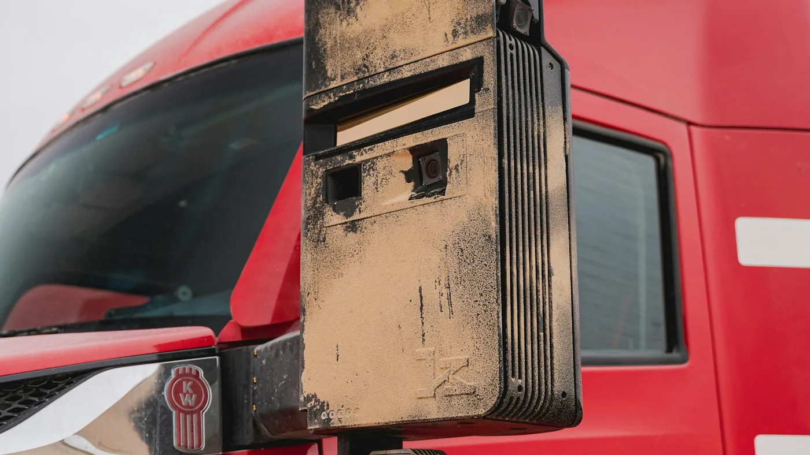

Kodiak AI anunció el 26 de agosto de 2026 una colaboración con AMD para incorporar procesadores EPYC a su plataforma de camiones autónomos de séptima generación. La computadora reúne y prepara información de cámaras, lidar y radares, y apoya la planificación del recorrido.
Según la compañía, la nueva solución busca procesar datos más rápido con menor consumo que la generación anterior. El comunicado no publica un porcentaje verificable de mejora de seguridad ni anuncia una operación en Argentina. Kodiak también distingue su actividad sin conductor en la cuenca del Permian de su objetivo de ampliar operaciones en autopistas durante el año: una meta no equivale a una puesta en servicio confirmada.
La información tiene que llegar a tiempo
Análisis de Zabala Repuestos. Una imagen detallada sirve de poco si llega demasiado tarde para tomar una decisión. El interés de este anuncio no está solamente en sumar potencia informática: está en sostener un flujo de trabajo previsible mientras el vehículo recibe información de varios sistemas al mismo tiempo.
Como ejemplo puramente ilustrativo, un camión que circula a 80 km/h avanza aproximadamente 2,2 metros en una décima de segundo. Ese cálculo no describe el rendimiento de Kodiak ni su distancia de frenado. Ayuda a visualizar por qué los tiempos de procesamiento merecen atención y por qué una especificación de computadora aislada no demuestra seguridad.
Más sensores no resuelven todo
Conviene pensar el sistema como una cadena: observar, interpretar, decidir y actuar. Una mejora en uno de esos pasos no garantiza el resultado completo. Para evaluar un vehículo autónomo interesa saber cómo detecta información incoherente, cómo responde a una avería y en qué circunstancias debe dejar de operar.
También importa qué puede verificar el personal de la flota. Una alarma útil debería llevar a una acción concreta, no obligar al operador a interpretar mensajes ambiguos. Las interfaces de diagnóstico, el registro de incidentes y el acceso a soporte son parte del producto que recibe la empresa.

El mantenimiento no desaparece con la autonomía
Un camión autónomo sigue necesitando una unidad mecánica en condiciones. La flota debe coordinar neumáticos, frenos, dirección, suspensión y carrocería con el estado de sus sensores y computadora. No conviene separar la inspección física del diagnóstico digital como si fueran dos vehículos independientes.
Para un taller, una pregunta central será qué intervenciones requieren comprobaciones posteriores del sistema de conducción. Cambiar un soporte, reparar una zona cercana a sensores o modificar una configuración debe consultarse en la documentación de la plataforma. Que una pieza encaje no demuestra que el conjunto esté validado para volver al servicio.
Cómo pedir evidencias de confiabilidad
Las cifras de kilómetros o cargas pueden aportar contexto, pero deben acompañarse de una descripción de las condiciones. No es lo mismo un circuito repetitivo que una ruta con desvíos frecuentes. Una evaluación seria debería precisar clima, velocidades, interacciones con otros vehículos y participación del soporte humano.
La empresa interesada también necesita conocer qué sucede fuera de esas condiciones. Si la operación se suspende por un desvío, una tormenta o una falla, debe existir un plan para proteger la carga y recuperar el vehículo. Esa contingencia pertenece al negocio de transporte, aunque la tecnología funcione bien dentro del escenario previsto.
Una computadora también necesita respaldo
Antes de adoptar una plataforma, conviene preguntar por disponibilidad de módulos, tiempos de reemplazo, versiones de software y vida de soporte. Una actualización debe quedar registrada para poder relacionar cambios de comportamiento con la configuración instalada. El historial técnico adquiere valor cuando varias unidades trabajan con versiones diferentes.
Otro punto es la responsabilidad operativa. La flota debe saber quién recibe una alerta, quién decide inmovilizar y quién autoriza el retorno al servicio. Tener más datos no simplifica automáticamente una organización si no están definidos esos pasos.
Preguntas para una prueba piloto
- ¿Qué recorridos y condiciones están expresamente incluidos?
- ¿Cómo se documentan fallas, intervenciones y actualizaciones?
- ¿Qué debe revisar el personal antes de cada salida?
- ¿Qué soporte existe fuera del horario habitual?
- ¿Cómo se recupera una unidad que no puede continuar?
- ¿Qué resultados se compararán con la operación actual?
Relevancia para el transporte argentino
El acuerdo es una novedad internacional, no una habilitación para circular sin conductor en el país. Su utilidad local está en mostrar que el desarrollo del camión incorpora proveedores de informática junto a los fabricantes de componentes tradicionales. Esa convergencia exige preguntas nuevas de mantenimiento, soporte y responsabilidad.
El punto a seguir no es solo qué procesador utiliza una plataforma, sino qué evidencia aporta el sistema completo en una aplicación real. Para una flota, la tecnología debe poder explicarse en términos conocidos: trabajo que puede cumplir, límites, disponibilidad y respuesta cuando algo falla.